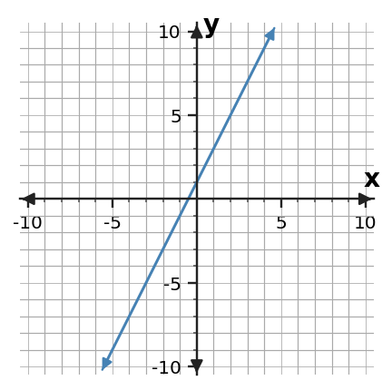
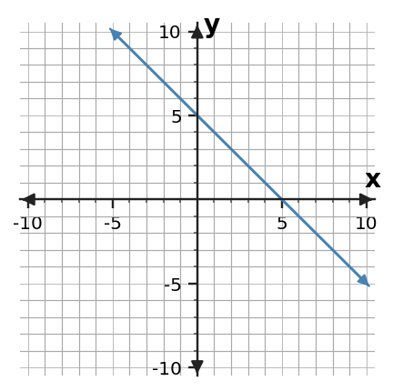

Algebra 1 · 1.4 Expressions and Structure · Practice 1
1. In the expression 4x + 8y - 8, list the terms and identify the coefficient of x and the constant term.
2. In 5(2x - 4), identify the factors before distributing. Then rewrite the expression without parentheses.
3. Evaluate 4a - 4b + 3 when a = -2 and b = 4. Show substitution first.
4. Evaluate 2x2 - 4 when x = -4. Explain why parentheses matter.
5. Combine like terms: 4x + 7 - 2x + 6 - x.
6. A student combines 4x + 3x2 as 7x2. Explain why the terms are not like terms.
7. Use the distributive property to rewrite -4(2x - 5).
8. Are 4(x + 4) - 2 and 4x + 14 equivalent? Expand one expression and justify.
9. Solve x + 4 > 10 and graph the solution on the number line.

10. Solve x - 6 ≤ -2 and graph the solution.
11. Solve 4x < 24. State whether the inequality direction changes and why.
12. Solve -4x ≥ 12. Explain the inequality-sign change caused by division.
13. Solve x/4 > 5 and check one value that should satisfy the solution.
14. Solve x/(-4) < 3. Explain why the direction reverses.
15. A student solves -2x > 10 and writes x > -5. Identify the error and correct the solution.
16. Write a one-step inequality whose solution is x ≤ -3. Then explain what the closed point and leftward shading would mean on a number line.
17. Plot (-5, 5) on the coordinate plane and state its quadrant or axis location.

18. A point is 6 units right and 4 units down from the origin. Write and plot its ordered pair.
19. A graph uses horizontal axis = days and vertical axis = plant height. Explain why the ordered pair (3, 17) must list days first.
20. A student labels the vertical axis x and horizontal axis y while plotting (4, 6). Explain how that can create an axis-swap error.
21. Use the graph scale to read the y-value on the line when x = 1.

22. Before reading a point from the graph, explain how you know what one small grid square represents on each axis.
23. State the x-intercept and y-intercept of the line shown as ordered pairs.

24. If the y-intercept (0, 7) represents money already in an account at time 0, interpret the intercept in context and distinguish it from the x-intercept.